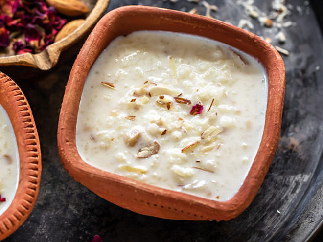

Kheer

Description
Kheer is Indian rice pudding made with only three basic ingredients- rice, milk and sugar.In India when we use the word kheer, we are usually referring to the kheer made with rice.However kheer can be made with other things as well like tapioca pearls, carrot, almonds etc.
Ingredients
- 1/4 cup rice 50 grams, I used basmati rice or use 1/3 cup for a thicker kheer
- 1 teaspoon ghee also known as clarified butter
- 3-4 green cardamom pods slightly crushed
- 1 liter whole milk
- 4-5 tablespoons sugar 50-62.5 grams, adjust to taste
- 3 tablespoons chopped nuts
Steps
- Rinse the rice until water turns clear. Then soak the rice in enough water for 20 to 30 minutes. Once 30 minutes are up, drain the rice using a colander and set aside.
- Heat a heavy bottom pan on medium heat. Then add 1 teaspoon of ghee to it and then add the soaked & drained rice. Also add 3-4 crushed green cardamom pods.
- Toss the rice with the ghee and cardamom for 1 to 2 minutes, stirring constantly until aromatic.
- Then add the milk to the pan and stir well. Set heat to medium-high.
- Let the milk come to a boil, this will take around 10-12 minutes. Stir in between so that milk doesn't stuck to the bottom of the pan.
- Once the milk has come to a boil, lower the heat to low and let the kheer cook for around 25 minutes on low heat. Stir every 2 minutes or so. The milk will reduce considerably after 25 minutes and the kheer would look thick and the rice will be completely cooked. If you want super thick kheer, cook for 15 more minutes at this point.
- Add in the sugar and mix. Also add in the nuts.
- Cook the kheer for 5 more minutes after adding the sugar and nuts. The sugar should dissolve completely. Don't worry if your kheer doesn't look very thick at this point. It will continue to thicken as it cools down.
- Remove pan from heat. Garnish with more nuts and serve kheer warm or chilled.
The page heavily borrows from this webpage